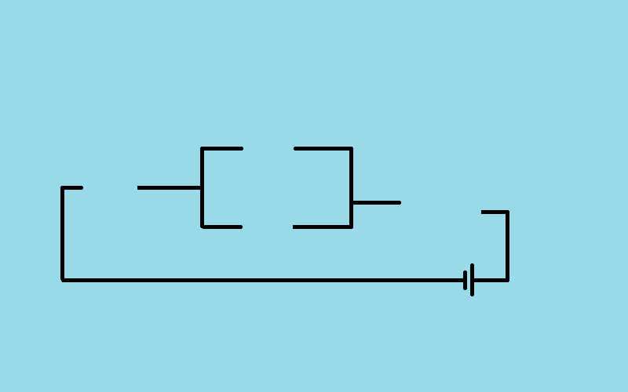
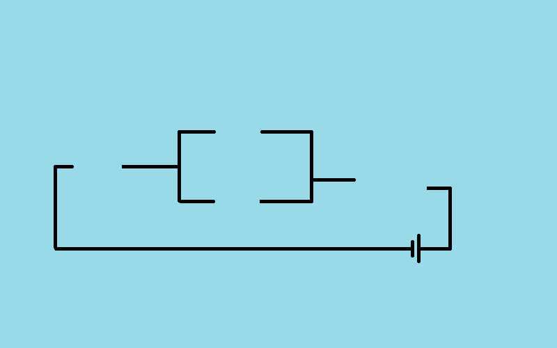
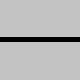
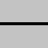

Događaji miša¶
U primeru „prekidač” smo pokazali kako možemo da reagujemo u programu kada korisnik pritisne taster miša. Iako korisnik posmatra klik kao jednu akciju, videli smo da je za računar to niz događaja koji počinje događajem tipa pg.MOUSEBUTTONDOWN.
U narednim primerima i zadacima ćemo koristiti ukupno tri tipa događaja koji nastaju upotrebom miša:
Spuštanje bilo kog tastera miša (kao u primeru sa prekidačem), kada dogadjaj.type ima vrednost pg.MOUSEBUTTONDOWN
Podizanje tastera miša, kada dogadjaj.type ima vrednost pg.MOUSEBUTTONUP
Pokret miša, kada dogadjaj.type ima vrednost pg.MOUSEMOTION. Zapravo, tokom pomeranja miša generiše se više ovakvih događaja (svaki od njih opisuje neko malo pomeranje miša u nekom veoma kratkom vremenskom intervalu, tako da svaki takav događaj obično opisuje pomeranje tek za nekoliko piksela).
Objekti - događaji čiji je tip pg.MOUSEBUTTONDOWN sadrže i neke dodatne podatke, kao što su:
dogadjaj.pos - pozicija miša u trenutku registrovanja događaja (korišćeno u primeru sa prekidačem)
dogadjaj.button - broj od 1 do 5, koji označava koje dugme miša je pritisnuto (1 - levo, 2 - srednje, 3 - desno, 4 - skrol na gore, 5 - skrol na dole)
Neki od dodatnih podataka o događaju, koje sadrže objekti - događaji tipa pg.MOUSEMOTION su:
dogadjaj.pos - pozicija miša nakon događaja pomeranja miša
dogadjaj.rel - uređeni par koji opisuje koliko se promenila pozicija miša od prethodnog događaja pomeranja miša
dogadjaj.buttons - tročlana lista logičkih vrednosti, koje za svako od tri dugmeta miša (0 - levo, 1 - srednje, 2 - desno) određuju da li je bilo pritisnuto tokom pomeranja miša.
Obrada klika - vežbanje¶
Možda niste primetili da u programu „prekidač” iz prethodne lekcije svetlo može da se uključi i isključi bilo kojim tasterom miša. To je tako jer se događaj istog tipa generiše za svaki taster miša, a mi nismo proveravali koji taster je bio pritisnut prilikom nastupanja događaja.

Zadatak - levi taster kao prekidač: Iskopirajte ovde program „prekidač”, a zatim ga doradite tako da se uključivanje i isključivanje sijalice može obaviti samo levim tasterom miša.
Pomoć: Koristite podatak dogadjaj.button.
Zadatak - tri prekidača: Iskoristite delove programa „prekidač” i napravite program koji simulra rad tri prekidača, kao u primeru.
 

{kind=link}
 

{kind=link}


Ostali događaji miša¶
Kao što je na početku ove lekcije rečeno, u programu se može reagovati i na događaje otpuštanja tastera miša i pomeranja miša. Radi toga je potrebno uporediti vrednost dogadjaj.type sa konstantama pg.MOUSEBUTTONUP i pg.MOUSEMOTION. Slede zadaci u kojima možete ovo i da isprobate.
Zadatak - crtanje linija: Dovršite program tako da se pomoću njega mogu crtati prave linije, kao u primeru.
Zadatak - crtanje linija sa brisanjem: Iskopirajte dole program za crtanje linija, a zatim dodajte mogućnost da se sve linije obrišu klikom na desni taster miša.
Pomoć: Da bismo u programu razlikovali levi i desni taster miša, ponovo treba koristiti podatak dogadjaj.button. Kod u funkciji obradi_dogadjaj sada treba da izgleda otprilike ovako:
Zadatak - prevlačenje: Sledeći program pokazuje kako da korisniku našeg programa omogućimo prevlačenje objekata.
Isprobajte program (prevucite jabuke u korpu) i potrudite se da ga razumete, a zatim odgovorite na pitanja ispod.


- redni broj jabuke koju crtamo
- Pokušajte ponovo
- redni broj jabuke koju prevlačimo
- Tačno
- ukupan broj jabuka
- Pokušajte ponovo
- broj preostalih jabuka na drvetu
- Pokušajte ponovo
Q-78: Šta predstavlja promenljiva i_jabuka u programu?
-
Q-79: Upari provere u programu sa njihovim značenjem.
Pokušajte ponovo!
- if mis_je_na_slici(dogadjaj.pos, korpa_poz, korpa_slika):
- da li jabuku treba obrisati
- if mis_je_na_slici(dogadjaj.pos, pozicije_jabuka[i]
- da li je korisnik "uzeo" jabuku
- if len(pozicije_jabuka) == 0:
- da li je igra završena
- if i_jabuka >= 0:
- da li je u toku prevlačenje
- očitavamo da li je taster miša dole tokom pomeranja
- To nije zgodan način, jer taster može biti pritisnut na praznom mestu (korisnik nije "uzeo" predmet koji treba da prevlači)
- prevlačenje je poseban tip događaja
- Ne, ne postoji takav tip događaja
- pri običnom pomeranju miša redni broj "jabuke koju prevlačimo" je -1
- Tačno
Q-80: Kako u programu razlikujemo prevlačenje od običnog pomeranja miša?